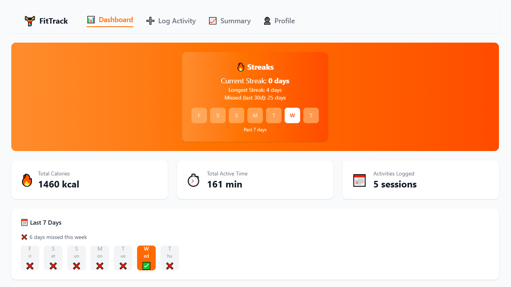
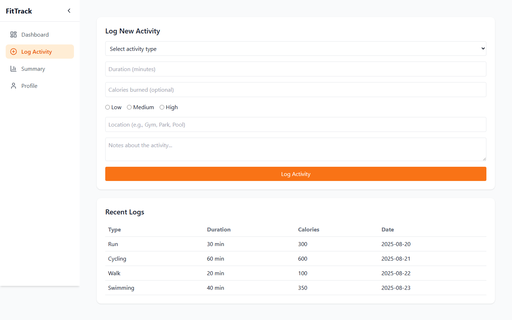

Full-stack · Cloud
Deployed
Azure Fitness Tracker
FitTrack is a responsive activity dashboard for logging workouts and turning them into streaks, weekly context, and progress summaries. Its repository pairs the React interface with a Python Azure Functions API; the live demo currently keeps activity data in the browser.
 React
React Tailwind CSS
Tailwind CSS- Recharts
- Azure Functions
- Cosmos DB
- Role
- Full-stack developer
- Type
- Cloud web application
- Focus
- Workout logging & progress

Overview
Problem & motivation
Daily logs become more useful when they reveal patterns. FitTrack brings workouts, streaks, missed days, and summary views together so consistency is visible at a glance.
My role
I built the React and Tailwind interface, its browser-based activity workflows and chart views, and the Python Azure Functions endpoints kept in the same repository.
What was built
Four routed views—Dashboard, Log Activity, Summary, and Profile—plus Functions for creating, reading, summarizing, updating, and deleting activity records.
- Capture activity type, duration, intensity, location, and notes.
- Track streaks and missed days against a Monday-to-Sunday week.
- Review calorie, active-minute, and session summaries with Recharts.

Inside the Build
- Interface
- React organizes the dashboard routes and interactions, Tailwind CSS provides the presentation layer, and Recharts renders progress views.
- API
- Python Azure Functions define focused routes for creating, reading, summarizing, updating, and deleting activity records.
- Data
- The deployed dashboard persists activity and demo state in local storage. The backend separately implements Cosmos DB document operations.
- Testing
- Testing Library setup is present, but the repository contains no project test files or published results, so no pass claims are shown.
Dashboard path
React
Routes & UI
Backend path
Challenges & Takeaways
Technical challenge
Streak and missed-day views needed to agree on what counted as a calendar day, including around local date boundaries.
How it was addressed
The date fixes replaced UTC-derived keys with one local YYYY-MM-DD formatter, normalized dates to local midnight, and anchored both views to Monday.
Specific takeaway
Calendar features need a single date convention. Mixing UTC serialization with local labels makes streak logic fragile at day boundaries.
Future improvement
Connect the deployed React workflows to the Functions API and Cosmos-backed persistence; the current demo stores activities locally and its API helper still targets localhost.
POST/api/log-activityValidate input and create an activityGET/api/activities/{userId}Read user-scoped activitiesGET/api/activities/summary/{userId}Aggregate totals with optional filtersPUT/api/activities/{activityId}Replace permitted activity fieldsDELETE/api/activities/{activityId}?userId=Delete with the user partition keyTesting Library setup exists, but project test files, captured responses, coverage, and pass results are not published.